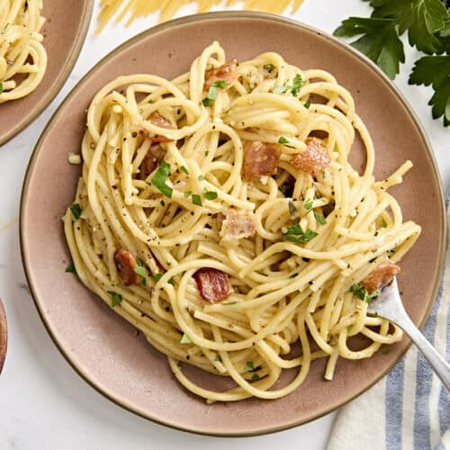

Classic Spaghetti Carbonara
A traditional Italian pasta dish that's quick and delicious.
Ingredients
- 200g spaghetti
- 100g pancetta or bacon
- 2 large eggs
- 50g grated Parmesan cheese
- Black pepper
- Salt
Directions
- Cook spaghetti in salted boiling water until al dente.
- Fry pancetta in a pan until crispy.
- Whisk eggs and Parmesan in a bowl.
- Drain pasta, reserving some water.
- Mix pasta with pancetta, then add egg mixture off heat.
- Add reserved pasta water if needed for creaminess.
- Season with black pepper and serve immediately.
Step 1: Prepare Your Ingredients
Gather all your ingredients. You'll need 200g spaghetti, 100g pancetta or bacon, 2 large eggs, 50g grated Parmesan cheese, black pepper, and salt. Having everything ready will make the cooking process smooth and enjoyable!
Step 2: Boil the Water
Fill a large pot with water and bring it to a boil. Add a generous pinch of salt to the water—it should taste like the sea! This will season your pasta perfectly.
Step 3: Cook the Spaghetti
Add 200g of spaghetti to the boiling water. Stir occasionally and cook until al dente—tender but still with a slight firmness when you bite it. This usually takes about 8-10 minutes. Avoid overcooking!
Step 4: Fry the Pancetta
While the pasta cooks, cut 100g of pancetta or bacon into small pieces and fry them in a pan over medium heat until they become crispy and golden. The rendered fat will add wonderful flavor to your dish!
Step 5: Make the Sauce
In a bowl, whisk together 2 large eggs and 50g of grated Parmesan cheese. This will create a creamy, luxurious sauce for your pasta. The heat from the pasta will cook the eggs without scrambling them!
Step 6: Combine Everything
Drain the pasta, reserving a cup of pasta water. In a large pan (off heat), combine the pasta and crispy pancetta. Pour the egg mixture over the pasta and toss quickly and gently. If needed, add a splash of pasta water to create a creamy consistency.
Step 7: Plate and Serve
Season with plenty of fresh black pepper and taste for salt. Divide into bowls and serve immediately while the pasta is hot and creamy. This is an authentic Carbonara—buon appetito! Enjoy this delicious Italian classic!